Section 3 Trade Examples
In this section we show some examples where each of the strategies had winning and losing trades.
3.1 Curve Carry Examples
The plot below shows the returns associated with each of the commodities inside the Curve Carry strategy. The results are presented on the same y-axis to make comparisons easier. From the image below it is clear that lean hogs (LH), natural gas (NG), refined sugar (QW), WTI crude (CL), RBOB gasoline (XB) and live cattle (LC) have had the greatest positive contributions to the performance of the strategy since inception. Negative performance on the other hand is dominated by Malaysian palm oil (KO) and cotton (CT).
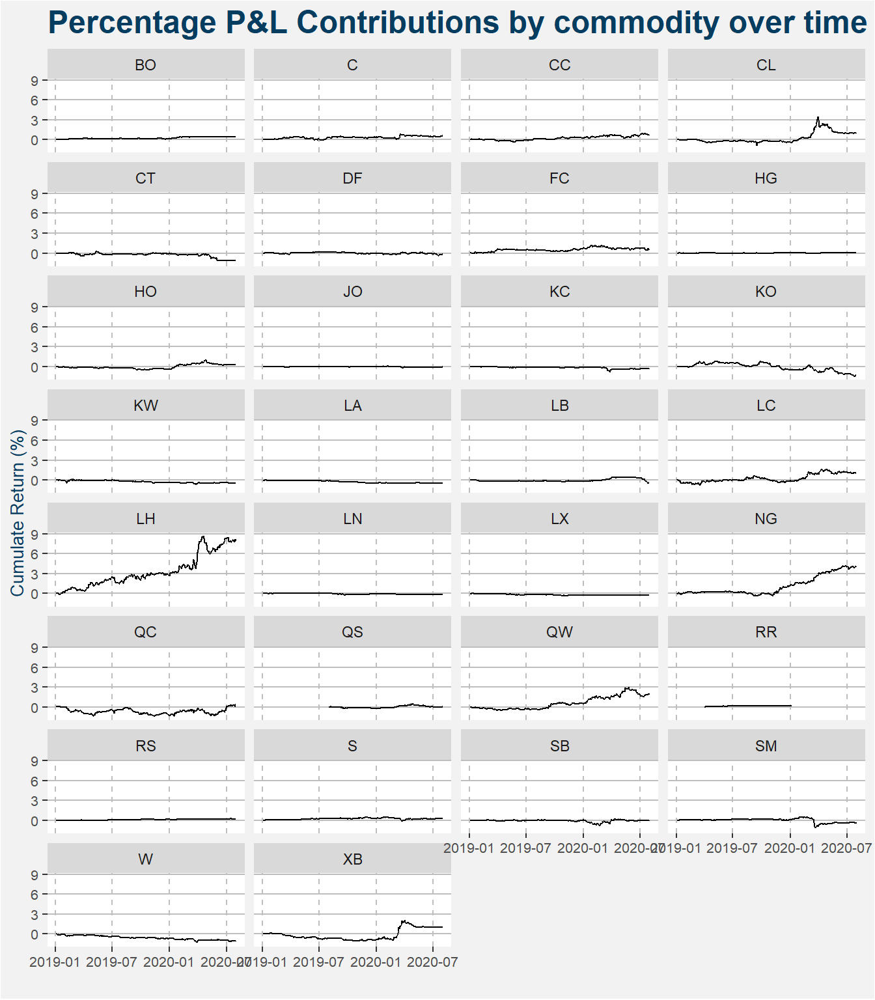
3.1.1 Winning Trade - LH
Lean hogs has been a solid return producer for the curve carry strategy since inception. The plot below highlights the cumulative performance contribution to the fund’s performance since its inception.
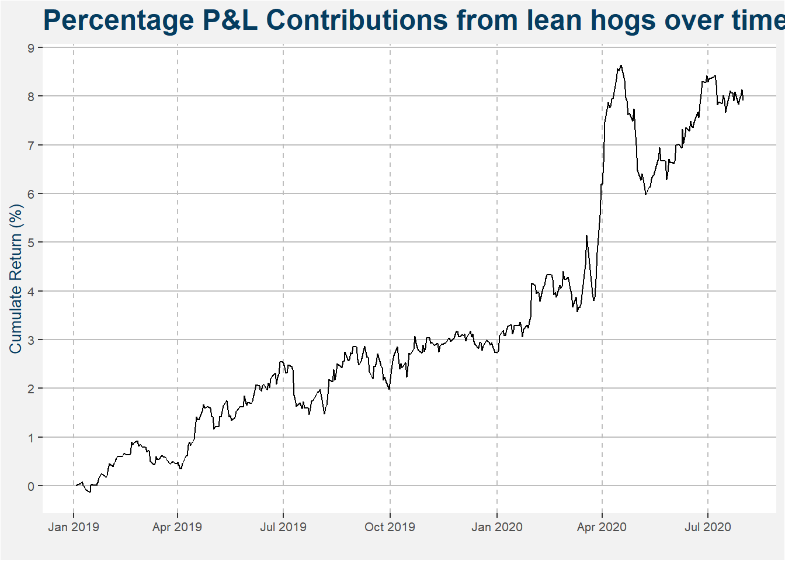
The plot below highlights the value of $1 invested in the near and far dated lean hog calendar spreads. Note that the results are shown on a logarithmic scale. The solid vertical line is set at 1 Jan 2019, the start of the quantitative commodity fund. Notice that both the near and far dated calendar spread performed tremendously well since the inception of the fund, but the results can also be extended back to the early 2000s
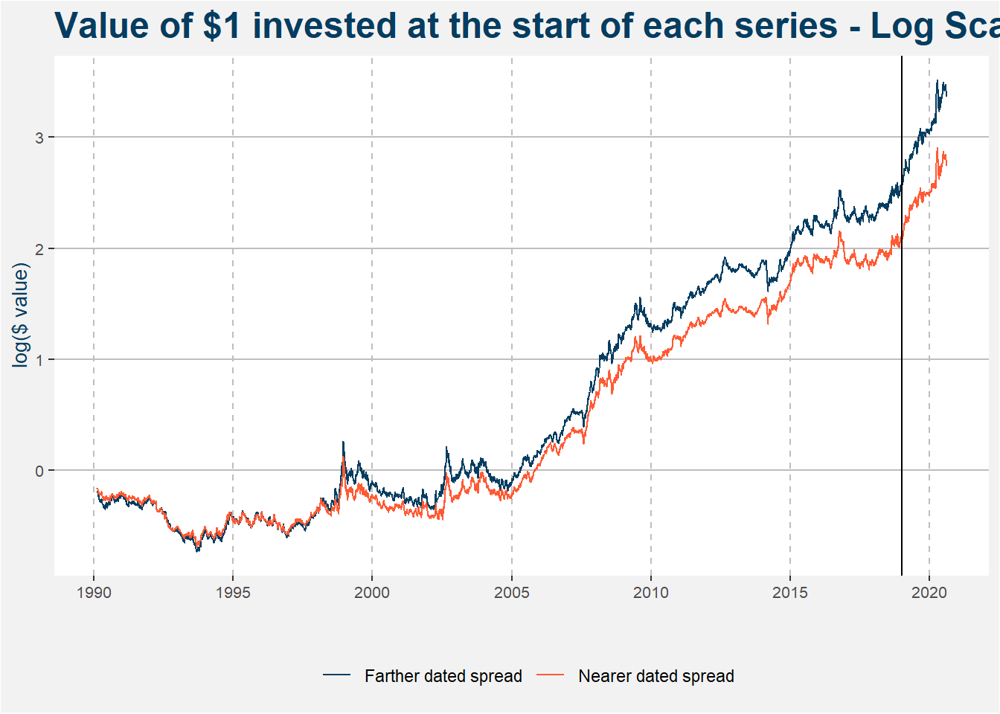
There is an interesting fundamental reason for this curve behaviour in the lean hog market. The shorthand version is that the United States struggles to keep pace with the projected number of hogs that they want to slaughter. A hog farmer cannot feed her hogs beyond a certain weight because the economics of it does not make sense. When the hogs hit their respective slaughter weights they have to compete with other farmers’ hogs for space at pork processing and packing facilities. Here the processors and packers can choose the cheapest hogs and drive to front of the futures curve down creating the formation of contango heading into expiry. For more information please see this link.
3.1.2 Losing Trade - KO
Malaysian palm oil has been a choppy performer for the curve carry strategy since inception. The plot below highlights the cumulative performance contribution to the fund’s performance since its inception.
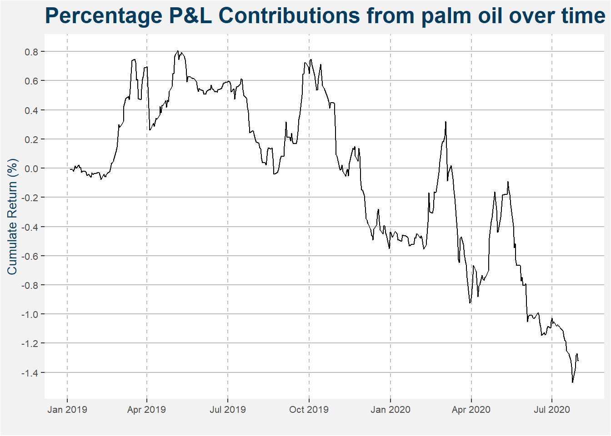
The plot below highlights the value of $1 invested in the near and far dated Malaysian palm oil calendar spreads. This is a commodity where we take both long and short calendar spread exposure, but it has proven difficult to trade successfully thus far.
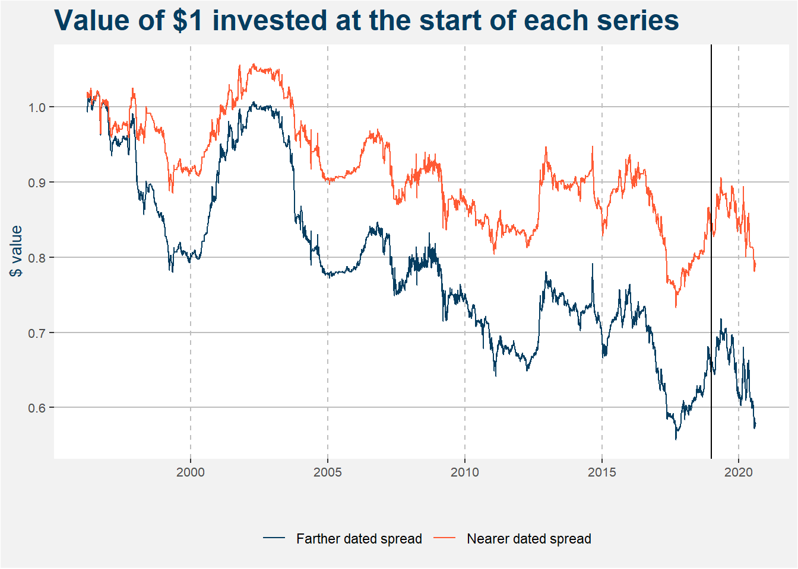
3.2 Trend Following Examples
The plot below shows the returns associated with each of the commodities inside the Trend Following Strategy. The performance of palladium (PA) is a good positive return to note. Strong negative performance can be seen in milk (DA) and rubber (OR).
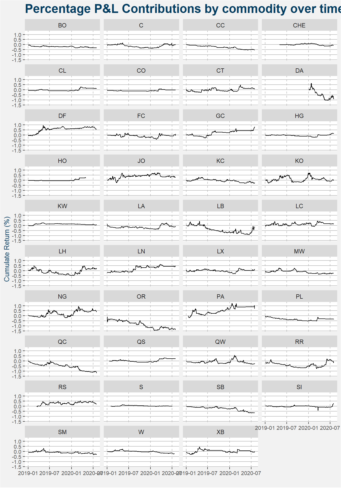
3.2.1 Trend Following Commentary
Recently there has been a collection of research trying to understand the underperformance of trend following strategies over the last decade. Some of the more interesting results are shown below:
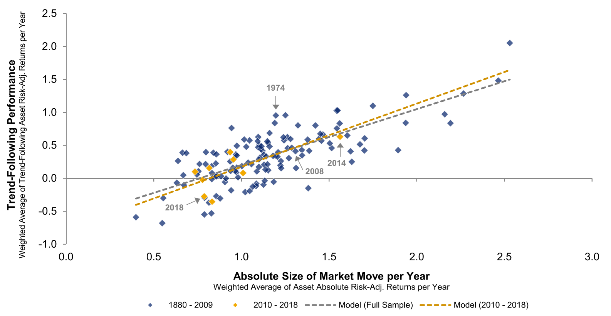
The researchers at AQR produced an interesting piece where they studied trend following performance as a function of the absolute size of market moves. The plot above shows the main result. The last couple of years have been highlighted in yellow. Note that there have not been nearly as strong market moves compared to historical results.
The above paper is quite interesting and looks at the trend following performance from a turning point of view. Intuitively, the more turning points we have in price series the lower the trend following return should be. This is mainly because of being whipsawed in and out of trades couples with trading costs and slippage. The plot below shows trend following performance as a function of the number of turning points. Notice the steady negative slope of the medians within the boxplots.
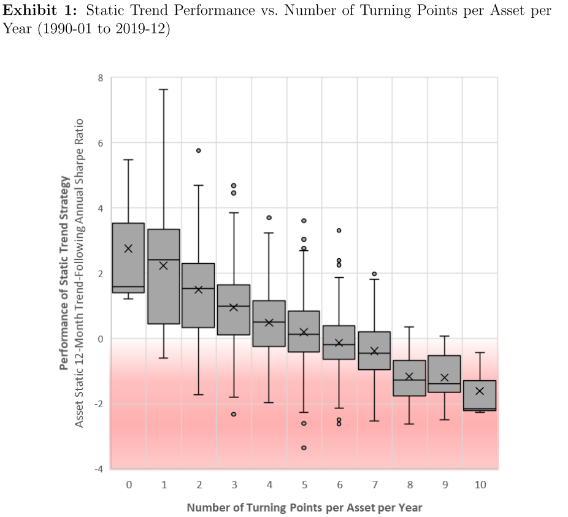
The plot below shows the same results but represented in a slightly different way. Here we can see that the last couple of years have had many more turning points in the price series compared to historical data.
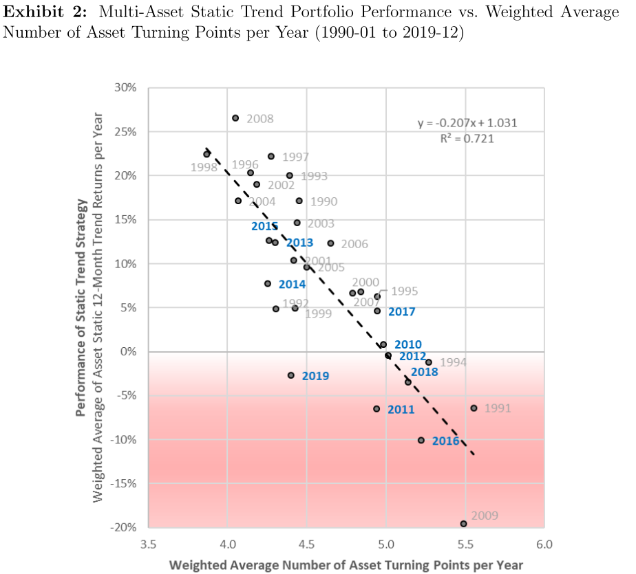
The question is then if we will continue to see an environment consisting of weak trends coupled with many turning points? We are not sure and do not claim to know the answer. However, if we see behaviour more closely aligned to the type of trends we have seen in the past we can be sure that trend following systems will perform well. In the meantime, we are happy to wait it out.
3.2.2 Winning Trade - PA
During 2019 the palladium trade was one where many trend following strategies would have been involved. In the facet plot below we show the cumulative return from the trade, the forecast values as well as the roll adjusted price. We had long positions where the forecasted numbers were roughly greater than 5. As the signal strength increased we added to the position. We exited from the long palladium trade during Feb/Mar 2020.
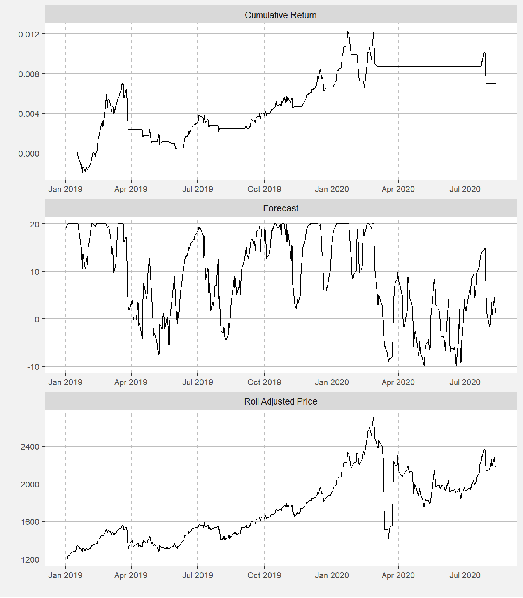
3.2.3 Losing Trade - DA
We only added milk to the trend following portfolio during Jan 2020. The main reason for the late addition was that it is not a commodity the team has traded in the past from a fundamental or relative value perspective. Our test showed that the addition of milk will add some diversification benefits to the portfolio. The results below show the cumulative return, aggregate scaled forecast and roll adjusted price of milk since its inception of the fund. Note that we also include those times where milk was not included in the portfolio.
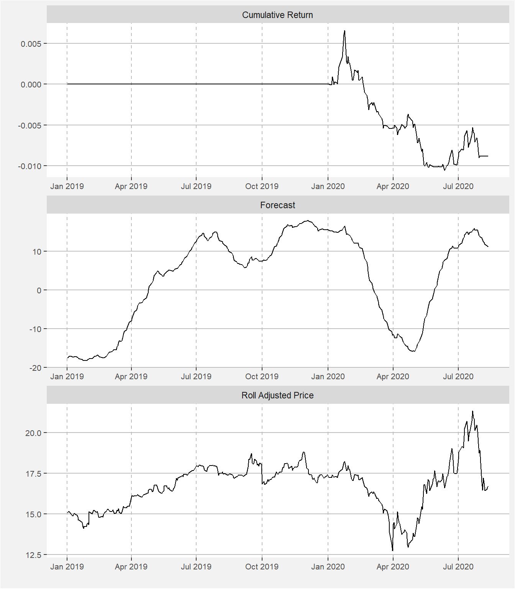
Milk was in a sustained uptrend from May 2019 through Dec 2019 before it started on a downward path before recouping in May. These price swings were too fast for our model to successfully capitalise on. We remain positive that the milk market will add additional diversification benefits to our trend following model.
There are some interesting dynamics taking place in the dairy markets because of supply chain disruptions caused by the global coronavirus crisis. Here is a link to an interesting video by Vox explaining the problem in some detail.
3.3 Remarks and References
Below we list a couple reference highlighting the benefits of adding trend and carry type strategies in a combined portfolio.